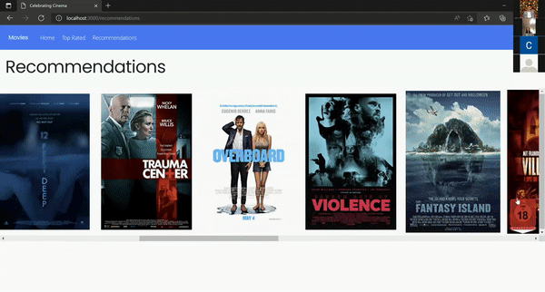
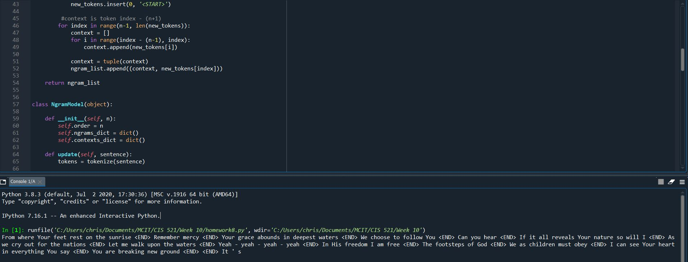
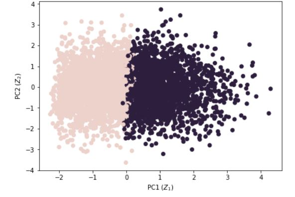

This application is a full stack recommender for movies that allows users to create a watchlist of movies they are
interested in and generate recommendations based off of the watchlist. Utilizes AWS, JavaScript, React, NodeJS, HTML, CSS, Excel, and Python.


For this project, we use the Python libraries OpenCV, Numpy, and dlib to swap a static image onto a video.
This project uses dlib to extract facial features on the souce image and target video and Numpy to perform
a Delauny triangulation where an affine transformation can be performed between the triangles in the source
image and target video.

In this project we implement image morphing techniques to blend two static images using Python libraries Numpy, OpenCV, Scipy, Matplotlib, and PIL. A Delauny triangulation is performed, and
an interpolation is performed between the source image triangles and affine transformation of triangles with corresponding indices in the destination
image. The result is the smooth blending and transition of images.

Implemented using the Ngrams model, this script generates random bodies of text related to an input corpus. This
project uses Python libraries Regular Expressions, String, Math, and Random. Example output text from an input corpus of relgious
worship songs:
"From where Your feet rest on the sunrise; Remember mercy; Your grace abounds in deepest waters;
We choose to follow You;
Can you hear;
If it all reveals Your nature so will I;
As we cry out for the nations;
Let me walk upon the waters;
Yeah - yeah - yeah - yeah;
In His freedom I am free;
The footsteps of God;
We as children must obey;
I can see Your heart in everything You say; You are breaking new ground"
Unsupervised Models Data Analysis

Implemented with Python, we take a csv file of sociodemographic and music preference data on 4,914 users and use
K-means clustering along with principal component analysis to identify clusters of users for ad targeting. For this project
the Python libraries Pandas, Numpy, Seaborn, and Scikit-learn were used.